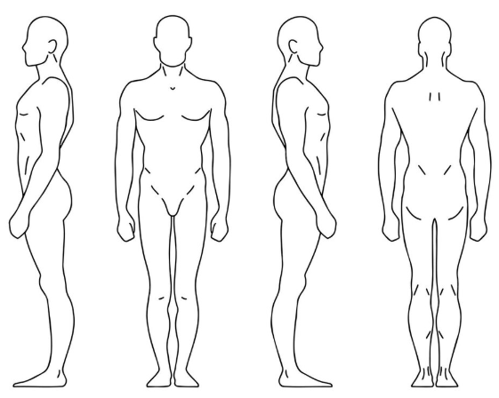

Mapa de Dolor

Leyenda de Colores
Dolor agudo, sensación de puñalada
Dolor difuso, difícil de localizar
Sensación de calor o frío
Sensación de hormigueo o pinchazo de aguja
Anestesia o disminución de sensibilidad
Sensación de rigidez, fatiga o cansancio
Tamaño del pincel:
5
Nombre del paciente:
Limpiar
Exportar como PDF